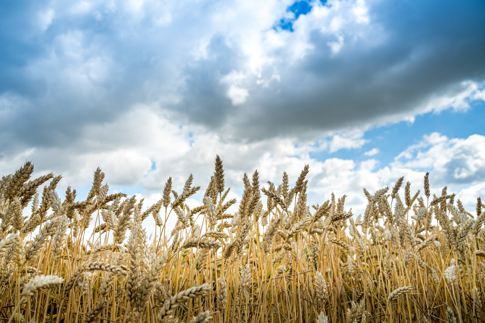
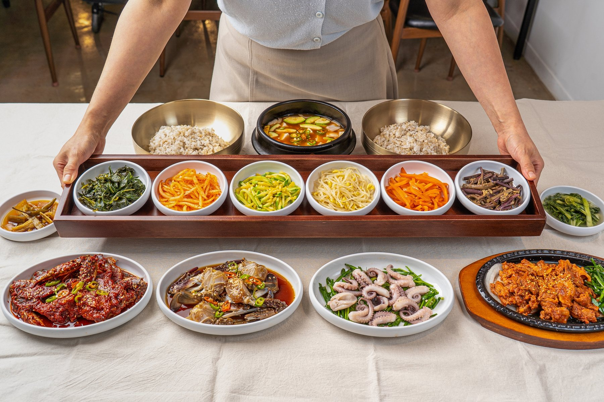

알이 꽉 찬 연평도 암꽃게만 골라, 직접 만든 소스에 속까지 스며들도록 담급니다.

국내산 보리를 매일 새로 지어, 나물과 장을 곁들여 한 상으로 올립니다.
재료를 고르는 일부터 양념까지, HACCP 인증 자체 공장에서 우리 손으로 만듭니다.
대표 〈확인 예정〉
HACCP 인증 자체 공장에서 직접 만들고, 현대백화점 온라인 식품관 입점과 홍콩·미국 수출로 그 맛을 인정받았습니다.